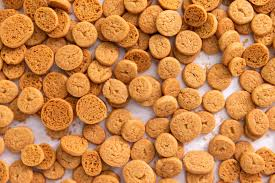

Peppernuts

Description
Peppernuts (pfeffernusse in German) are a German cookie traditionally made around the holidays. They can be soft or crunchy, but the correct way to make them is crunchy (at least that is how I was taught to make them).
Ingredients
- 3 cups white sugar
- 3 cups brown sugar
- 2 eggs
- 1 cup shortening
- 1/2 cup light Karo syrup
- 1 cup water
- 1 tsp anise oil
- 1 tsp ground cloves
- 1 tsp cinnamon
- 1 tsp ginger
- 1 heaping tsp baking powder
- 1 cup finely ground pecans
- 9-10 cups flour
Steps
- In a large bowl, combine sugar, eggs, shortening, Karo syrup, and water. Warm until shortening melts
- Add spices, baking powder, and pecans
- Add flour
- Chill dough for at least 30 minutes
- Roll into logs
- Cut into "buttons" (freezing the dough will makek this easier)
- Bake for 10 min at 350 degrees